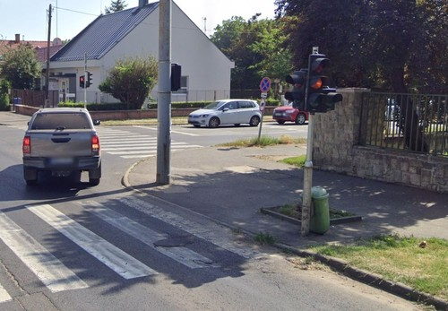
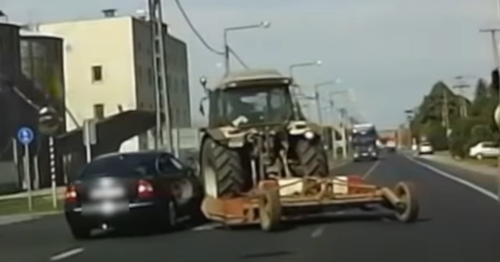
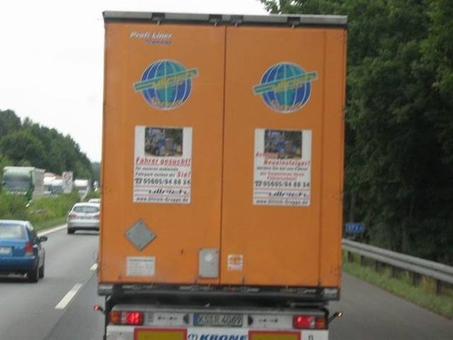
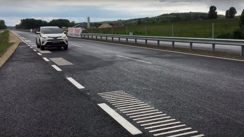

Közlekedési tapasztalatok

Gyalogos átkelőhely
Jobbra kis ívben kanyarodsákor mindig elsőbbséget kell adni a gyalogos átkelőhelyen áthaladó gyalogosnak.
Ennek a végrehajtását nagyban segíti a kereszteződésben kiépített közlekedési jelzőlámpa, mert akkor egyértelműen el lehet dönteni az elsőbbség adási kötelezettséget.
Mivel általában a gyalogosok és a járművek párhuzamosan haladnak egymás mellett, így egyidőben vannak az áthaladákor, de elinduláskor a gyalosoknak hamarabb vált zöldre a lámpa, majd ezek után a járműveknek és megálláskor ugyanilyen sorrendben.
Ha közlekedéskor látjuk, hogy a gyalogosnak piros lámpája van, akkor nemsokára a járműveknek is piros lesz a lámpája.

Mezőgazdasági járművek
A mezőgazdasági járműveket a földművelési munkálatokra tervezték, hogy könnyebben el lehessen végezni a növénytermesztést.
Így a beépített teljesítmény nem a haladási sebbességen, hanem a lóerőrőn van. Megfigyelhető ennek a hátránya, hogy a közúton
sokan nem bírják kivárni a mezőgazdasági járművek elengedését, ezért veszélyes manőverezésbe kezdenek. Látható a képen is, hogy
az autós előzéskor nem mérlegelte kellően a traktor sebességét és a sofőr figyelmetlenségét, ezért baleset lett az eredménye.

Légfékkel működő járművek
Sokan nem tudják, hogy a nehéz rakományokat szállító gépjárművek fékberendezései általában légfékkel működnek,
ezért közlekedéskor a kellő követési távolságot érdemes betartani. Mivel a légtartályban tárolt levegő mennyisége
korlátátozott, így előfordulhat, hogy jármű elkezd gurulni megállás után, amikor elfogyik a levegő. Teherautók fékezésekor
pedig arra lehetünk figyelmesek, hogy azonnali megállásra képesek.

Zenélő út
Az R67-es út különlegessége az úgynevezett zenélő útszakasz, amelynek technológiáját Magyarországon
itt alkalmazták először. A külső sáv külső szélére ráhajtva a Republic együttes A 67-es út című dalának
dallama hallható. A zenélő szakasz igénybe vételére ajánlott sebesség 80 km/h.